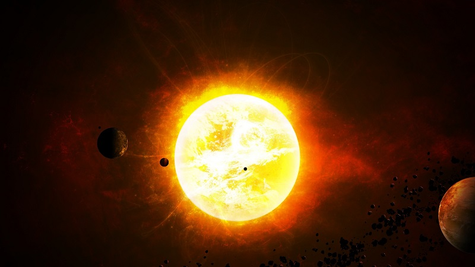

Как устроена Солнечная система
Как известно, Солнечная система состоит из различных астрономических объектов, вращающихся вокруг общего центра. В том числе, в неё входят планеты и их спутники. А центром является наше Солнце.
На самом деле, раньше это была звёздная система. Однако со временем поверхности тел остыли и они превратились в планеты. Можно сказать, что планеты — это потухшие звёзды. Хотя в их ядре и продолжаются термоядерные реакции, они лишились остальных свойств светил.
Какие особенности имеет Солнечная система
По оценке учёных, наша совокупность космических объектов, которые движутся вокруг центральной звезды, возникла около 4,57 млрд лет назад. Считается, что её формирование произошло в результате гравитационного сжатия огромного газопылевого облака.
Разумеется, большую часть массы занимает главное светило, а остальная приходится на планеты. Хотя, стоит заметить, другие элементы всё-таки составляют небольшой процент массовой доли.Помимо всего, Солнечная система содержит пять карликовых планет, различные малые тела, кометы и иные астрономические объекты.
Соответственно, говоря про звезды Солнечной системы, подразумевается лишь одно светило — Солнце. Не секрет, что среди ярких звезд на небе, в первую очередь, мы видим именно его. Поскольку оно самое близкое к нам. И вообще, это мы движемся около него.
Потухшая звезда в Солнечной системе становится планетой.
Итак, можно выделить основные черты:
- планетное движение происходит по круговым (или почти круговым) траекториям;
- орбиты планет расположены в экваториальной плоскости главной звезды;
- орбиты планет расположены в экваториальной плоскости главной звезды;
- практически вся системная масса приходится на центральное светило, которое своей силой притяжения удерживает все тела возле себя.
Список планетных тел
Как установили, Солнечная система имеет планеты, вращающиеся вокруг главного светила. Они имеют круговые орбиты и лежат в практически одной плоскости эклиптики.
Всего их восемь: Меркурий, Венера, Марс, Юпитер, Сатурн, Уран, Нептун и, конечно, наша родная планета Земля.
По данным астрономов, Меркурий это самая маленькая потухшая звезда Солнечной системы. Хотя раньше его место занимал Плутон. Правда, недавно его официально признали карликовой планетой и исключили из общего списка.
Безусловно, изучение окружающего нас космоса начинается с области, которая нас окружает. А исследование состава и структуры дают понимание того, как устроена Вселенная в целом.